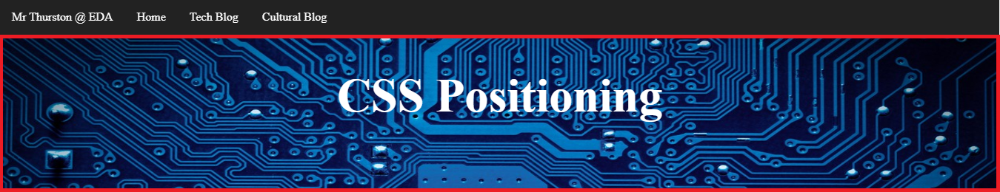
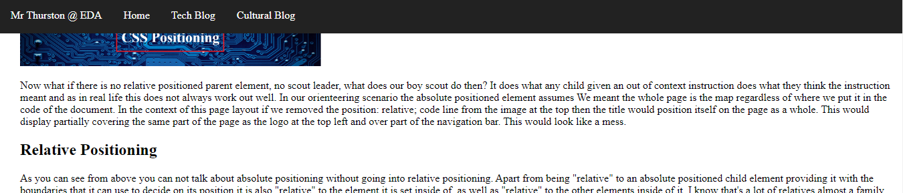

CSS Positioning
CSS uses positioning to layout all of the bits a pieces that make up a web page. Even when no code has been specified CSS still uses static positioning, that is the normal way a pages pieces sit together. Being normal isn't that exciting and isn't worth talking about, what is are the ways of positioning that give us more control and do something outside of the norm. This is where we with a little bit of extra code absolute, fixed and relative positioning comes into play.
Absolute Positioning
What absolute positioning does is that it takes elements(a technical name given to things that make up the page) out of the flow of the page, being ignored by and ignoring other elements on the page.
An absolute positioned element appears on the page depending on coordinates set in its code top, bottom, left etc. If you think of it as an absolute positioned element as a boy scout trying to find its way on a map with only a couple of grid coordinates A1 utmost top left coordinate in the grid in code terms would relate to top: 0; left: 0; so quite straightforward thus far what is really interesting is what an absolute positioned element considers the map.
To determine what the "map" is, our boy scout absolute positioned element first looks for another type of positioned element to tell it what its boundary is. In technical terms this would be an element set to relative positioning that its code has been written inside of, or for our hypothetical example think of this as a scout leader telling our boy scout where he can and can't go for this exercise effectively giving him a smaller map within this boundary. In CSS terms this means the element will be positioned within the parent element (scout leader's map). For example the title of this blog post is an absolute positioned element given a set of coordinates to site in the correct place within the boundaries of the image at the top of the page its relative positioned parent element.

Now what if there is no relative positioned parent element, no scout leader, what does our boy scout do then? It does what any child given an out of context instruction does what they think the instruction meant and as in real life this does not always work out well. In our orienteering scenario the absolute positioned element assumes We meant the whole page is the map regardless of where we put it in the code of the document. In the context of this page layout if we removed the position: relative; code line from the image at the top then the title would position itself on the page as a whole. This would display partially covering the same part of the page as the logo at the top left and over part of the navigation bar. This would look like a mess.
Relative Positioning
As you can see from above you can not talk about absolute positioning without going into relative positioning. Apart from being "relative" to an absolute positioned child element providing it with the boundaries that it can use to decide on its position it is also "relative" to the element it is set inside of, as well as "relative" to the other elements inside of it. I know that's a lot of relatives almost a family reunion going on here, let's think of it in a practical way.
As we discussed the image earlier, and I am sorry to say but simplicity's sake I lied. It is actually an invisible box around the image that both the title and the image sit inside. Think of it as putting two different sized photos in the same picture frame. They are both encased inside but it does more than just hold them in it also keeps its shape it doesn't stretch or contract with the size of the screen it well stays "relative".
Try resizing the window you are viewing this in you see that the image and title stay about the same in relation to each other. On the other hand look at the copyright information below them. This is outside the invisible box, do you see how it starts to look a bit wired at curtin sizes?
Fixed Positioning
By now you would have noticed that the navigation bar at the top of the page is following you. No it's not a stalker is a fixed positioned element. A fixed positioned element is fixed or attached to the same position on the screen. It functions similar to our absolute positioned element earlier in that it has its set of map coordinates but for a fixed position element there is no searching for a parent element to tell it what to do. It already knows what to do its a fixed positioned element it has a job and that job is to find its coordinates on your screen (viewport in technical jargon) then stay there until it's told otherwise and its good at its job.
More to know
There is more to positioning than these three (four if you include static positioning) types of positioning. There are others like sticky positioning, z-index ect. this is however not covered in this post maybe another time. Thanks for reading.